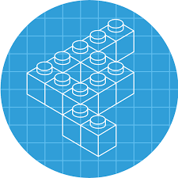

БЭМ (Блок, Элемент, Модификатор) — компонентный подход к веб-разработке. В его основе лежит принцип разделения интерфейса на независимые блоки. Он позволяет легко и быстро разрабатывать интерфейсы любой сложности и повторно использовать существующий код, избегая «Copy-Paste».
«Блок», «элемент» и «модификатор» — основные термины БЭМ. Это необходимые и достаточные понятия для описания интерфейса любой сложности.
Блок — это независимый интерфейсный компонент. Блок может быть простым или составным (содержать другие блоки). При создании блока нужно обеспечивать возможность его использования в любом месте web-страницы, а также повторения в том же самом месте страницы (родительском элементе). Блок должен включать в себя всю реализацию, необходимую для представления части интерфейса, которую он выражает.
Элемент — это составная часть блока. Элементы контекстно-зависимы: они имеют смысл только в рамках своего блока. Элемент — не обязательная составляющая блока, небольшие блоки обходятся без элементов.
Модификатор — это свойство блока или элемента, задающее изменения в их внешнем виде или поведении. Модификатор может быть булевым (например, button_big) или парой ключ-значение (например, menu_type_bullet, menu_type_numbers). У блока или элемента может быть несколько модификаторов одновременно.